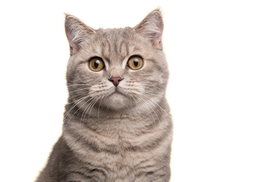

The origin of the English word cat, Old English catt, is thought to be the Late Latin word cattus,
which was first used at the beginning of the 6th century.
The Late Latin word may be derived from an unidentified African language. The Nubian word kaddîska 'wildcat' and Nobiin kadīs are possible sources or cognates.
The Nubian word may be a loan from Arabic قَطّ qaṭṭ ~ قِطّ qiṭṭ.
However, it is "equally likely that the forms might derive from an ancient Germanic word, imported into Latin and thence to Greek and to Syriac and Arabic."
The word may be derived from Germanic and Northern European languages, and ultimately be borrowed from Uralic, cf. Northern Sami gáđfi,
'female stoat', and Hungarian hölgy, 'lady, female stoat'; from Proto-Uralic *käďwä,
'female (of a furred animal)'.
The English puss, extended as pussy and pussycat, is attested from the 16th century and may have been introduced from Dutch poes or from Low German puuskatte,
related to Swedish kattepus, or Norwegian pus, pusekatt. Similar forms exist in Lithuanian puižė and Irish puisín or puiscín.
The etymology of this word is unknown, but it may have arisen from a sound used to attract a cat.
A male cat is called a tom or tomcat (or a gib, if neutered). A female is called a queen (or a molly, if spayed),
especially in a cat-breeding context. A juvenile cat is referred to as a kitten. In Early Modern English, the word kitten was interchangeable with the now-obsolete word catling.
A group of cats can be referred to as a clowder or a glaring.